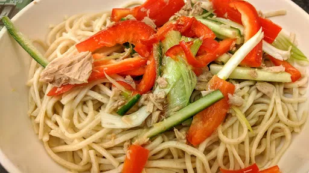

Tuna noodles with honey and ginger dressing
20 mins
Serves 3

Ingredients
-
3
spring onions, sliced lengthways
-
¼
cucumber, cut in half seeds removed and sliced thinly
-
½
red pepper, sliced thinly
-
185
g tin of tuna, drained
-
0.5x 400 g pack fresh egg noodles
Dressing
-
2
tsp honey
-
1
tbsp fish sauce
-
1
tbsp white wine vinegar
-
2
tbsp oil
-
1
tsp grated fresh ginger
-
1
fat red chilli, deseeded and finely chopped
- salt and pepper
Instructions
- Mix the dressing ingredients together in a mug or bowl.
- In another bowl, mix togther the spring onions, cucumber, red pepper and tuna.
- Boil some water in the kettle, pour the water over the fresh egg noodles and leave to stand for 1 minute. Drain
- Divide the noodles between the plates, placing the tune mix over the top. Drizzle over the dressing.
Nosh for graduates
Short Link
Long Link